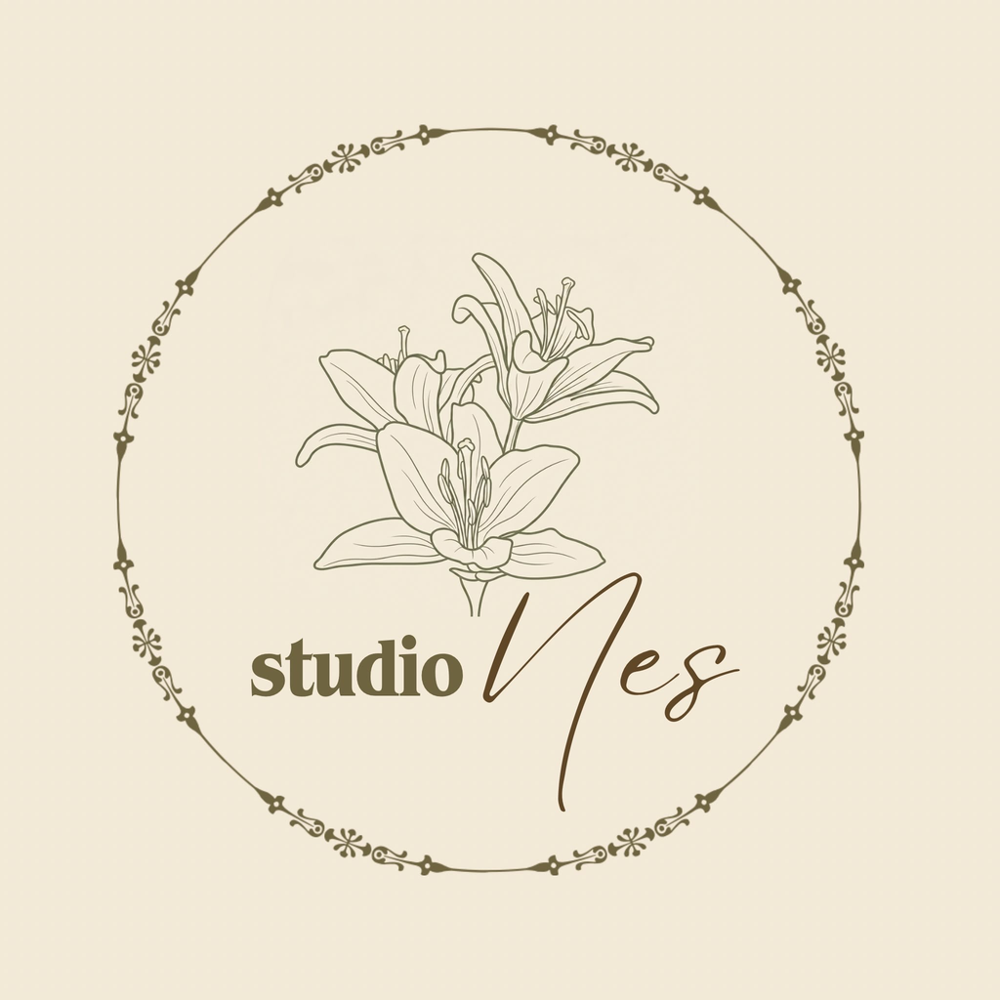

El emeği
Her tuval tek tek çalışılır; seri üretim veya dijital baskı hissinden uzak bir yaklaşım hedeflenir.

Ness Artel yapımı tuval çalışmaları
Hakkında
Ness Art; akrilik boya ile hazırlanmış, tek ve özgün tuval çalışmalarını bir araya getirir. Doğa manzaraları, deniz atmosferi, çiçek kompozisyonları ve sakin renk geçişleri markanın görsel dünyasını oluşturur.
Bu site, eserlerin daha düzenli sunulması, satış platformlarına kolay yönlendirme yapılması ve özel sipariş taleplerinin net şekilde alınabilmesi için hazırlanmıştır.
Her tuval tek tek çalışılır; seri üretim veya dijital baskı hissinden uzak bir yaklaşım hedeflenir.
Orman yeşili, toprak tonları, krem ve yumuşak ışık geçişleri tasarım kimliğinin ana parçalarıdır.
Tablolar hem ev dekorasyonu hem de kişisel ve anlamlı hediye seçeneği olarak sunulur.